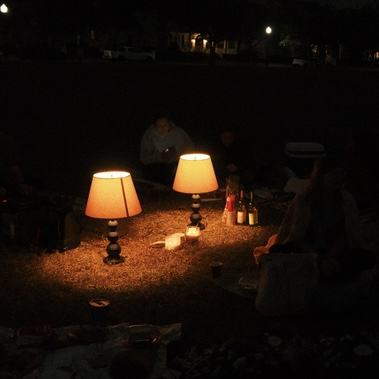

|- - - - - WINTER-PICNIC-SUNSET-SET- - - - -|
--OPEN-INVITE--
ON
SUNDAY
DECEMBER FOURTEENTH
TWENTY TWENTY-FIVE
@
FOUR PM
UNTIL
SEVEN FOURTY-FIVE PM (ISH)
@
LAKE EOLA PARK
28.54497° N, 81.37117° W
(EAST SIDE, BY THE PAGODA)
[DAY OF UPDATES:
@telestai.info ON IG]
YOU ARE INVITED TO CELEBRATE
FOR NO PARTICULAR REASON
JUST BECAUSE WE CAN
WITH
MUSIC
&
A PICNIC

MUSIC (PROVIDED)
e.g.
french touch
jazz house
U.K Garage
prog. house
disco
trance 2.0
w/ a sprinkle of bass ;)
PICNIC (PROVIDED BY YOU)
bring your own:
blanket (picnic)
blanket again (winter picnic)
food/charcuterie
drink/wine
art stuff/kandi
board game/frisbee/book
holiday cheer :)
PLEASE ABIDE BY THE
RULES:
1. COME FOR THE MUSIC.
2. BE OPEN TO UNFAMILIAR SOUNDS.
3. FACE ONE ANOTHER, NOT THE DJ.
4. BE PRESENT, NOT ONLINE.
⠀⠀⠀⠀⠀⠀⠀⠀⣠⣶⣶⣶⣦⠀⠀
⠀⠀⣠⣤⣤⣄⣀⣾⣿⠟⠛⠻⢿⣷⠀
⢰⣿⡿⠛⠙⠻⣿⣿⠁⠀⠀⠀⣶⢿⡇
⢿⣿⣇ ⠈⠏thank you for coming <3
⠻⣿⣷⣦⣤⣀⠀⠀⠀⠀⣾⡿⠃⠀
⠀⠀⠀⠀⠉⠉⠻⣿⣄⣴⣿⠟⠀⠀⠀ -srowe/telestai
⠀⠀⠀⠀⠀⠀⠀⣿⡿⠟⠁⠀⠀⠀⠀